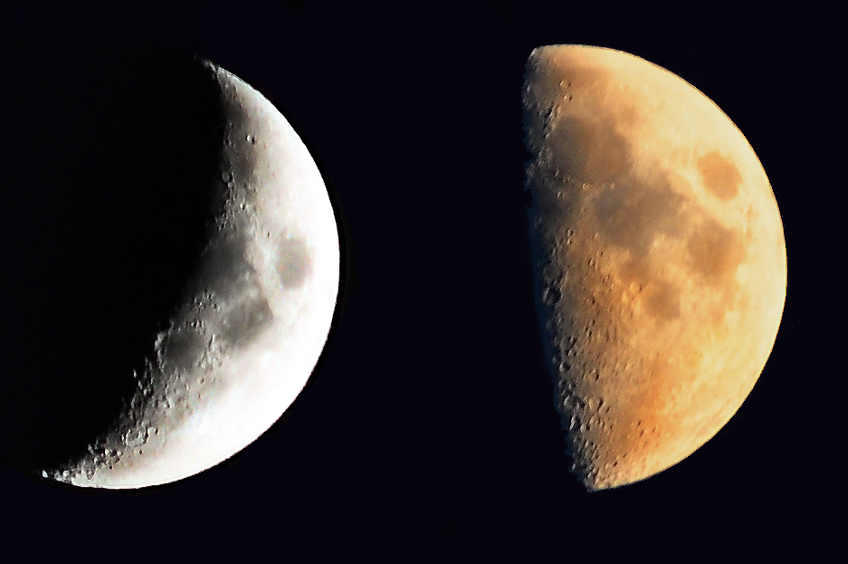

Moon Intro:
The Moon is Earth's only natural satellite. At about one-quarter
the diameter of Earth (comparable to the width of Australia),[15]
it is the largest natural satellite in the Solar System relative
to the size of its planet,[f] the fifth largest satellite in the
Solar System overall, and is larger than any dwarf planet. Orbiting
Earth at an average distance of 384,400 km (238,900 mi),[16] or about
30 times Earth's diameter, its gravitational influence slightly lengthens
Earth's day and is the main driver of Earth's tides. The Moon is classified
as a planetary-mass object and a differentiated rocky body, and lacks any
significant atmosphere, hydrosphere, or magnetic field.
Its surface gravity is about one-sixth of Earth's (0.1654 g);
Jupiter's moon Io is the only satellite
in the Solar System known to have a higher surface gravity and density.
The Moon is a very slightly scalene ellipsoid due to tidal stretching,
with its long axis displaced 30° from facing the Earth, due to gravitational
anomalies from impact basins. Its shape is more elongated than current tidal
forces can account for. This 'fossil bulge' indicates that the Moon solidified
when it orbited at half its current distance to the Earth, and that it is now
too cold for its shape to adjust to its orbit.
info
- Radius: 1,737.1 km
- Mass:
- Age: 4.53 billion years
- Gravity: 1.62 m/s²
- Orbital Period: 27 days
- Density: 3.34 g/cm³
- Surface area: about 14.6 million square miles (38 million square kilometers)
Compostion
Isotope dating of lunar samples suggests the Moon formed around
50 million years after the origin of the Solar System.
Historically, several formation mechanisms have been proposed
but none satisfactorily explained the features of the Earth–Moon system.
A fission of the Moon from Earth's crust force
would require too great an initial rotation rate of Earth. None of these hypotheses can account
for the high angular momentum of the Earth–Moon system.
Moon Landing
The United States' Apollo 11 was the first
crewed mission to land on the Moon, on 20 July 1969.
Crescetn & half Moon

During the lunar phases, only portions of
the Moon can be observed from Earth.
PROPERTIES OF MOON
Surface Area
The moon's surface area is about 14.6 million
square miles (38 million square kilometers),
which is less than the total surface area of the
continent of Asia (17.2 million square miles or 44.5 million square km).
Gravitational field
The gravitational field of the Moon has been measured through
tracking the Doppler shift of radio signals emitted by orbiting
spacecraft. The main lunar gravity features are mascons, large
positive gravitational anomalies associated with some of the giant
impact basins, partly caused by the dense mare basaltic lava flows
that fill those basins.[108][109] The anomalies greatly influence
the orbit of spacecraft about the Moon.
Magnetic field
The Moon has an external magnetic field of generally less than 0.2 nanoteslas,
[65] or less than one hundred thousandth that of Earth. The Moon does not
currently have a global dipolar magnetic field and only has crustal
magnetization likely acquired early in its history when a dynamo was
still operating.[66][67] However, early in its history, 4 billion years ago,
its magnetic field strength was likely close to that of Earth today.[65] This
early dynamo field apparently expired by about one billion years ago, after the
lunar core had completely crystallized.
Orbit
Unlike most satellites of other planets, the Moon orbits closer to
the ecliptic plane than to the planet's equatorial plane. The Moon's
orbit is subtly perturbed by the Sun and Earth in many small, complex
and interacting ways. For example, the plane of the Moon's orbit gradually
rotates once every 18.61 years
Relative size
The Moon is an exceptionally large natural satellite relative to Earth:
Its diameter is more than a quarter and its mass is 1/81 of Earth's.[79]
It is the largest moon in the Solar System relative to the size of its
planet,[i] though Charon is larger relative to the dwarf planet Pluto,
at 1/9 Pluto's mass.[j][152] The Earth and the Moon's barycentre, their
common center of mass, is located 1,700 km (1,100 mi) (about a quarter of Earth's radius)
the Earth's surface.